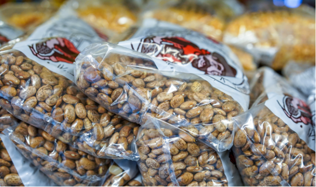
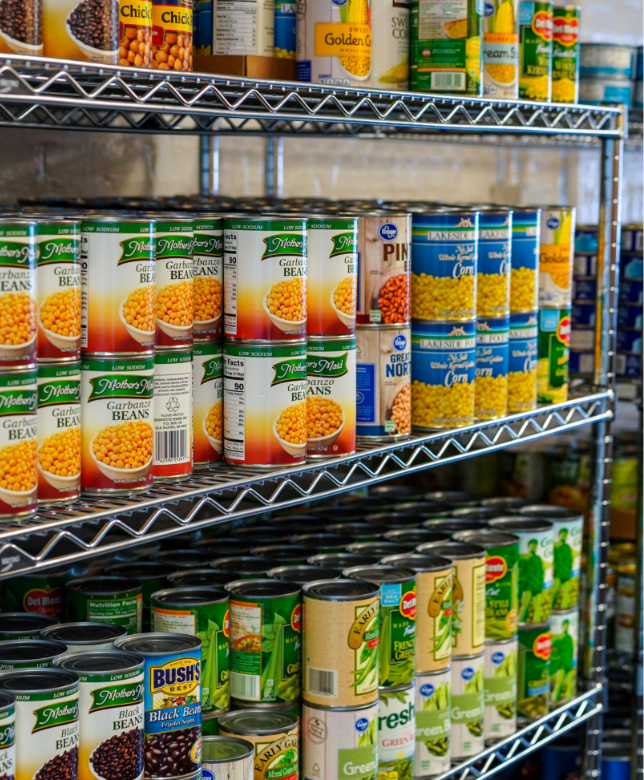
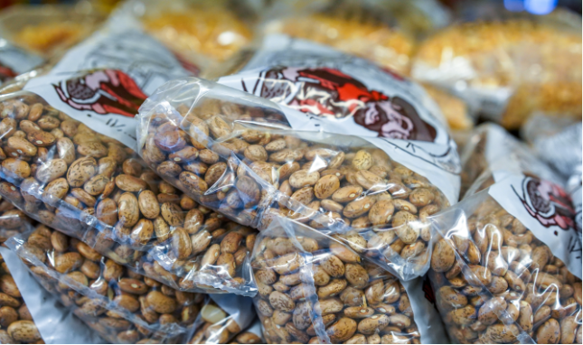
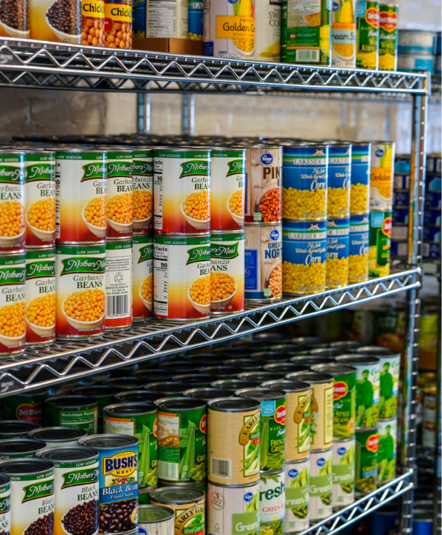
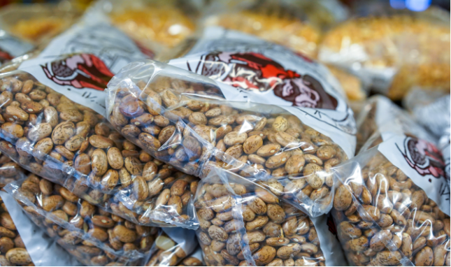
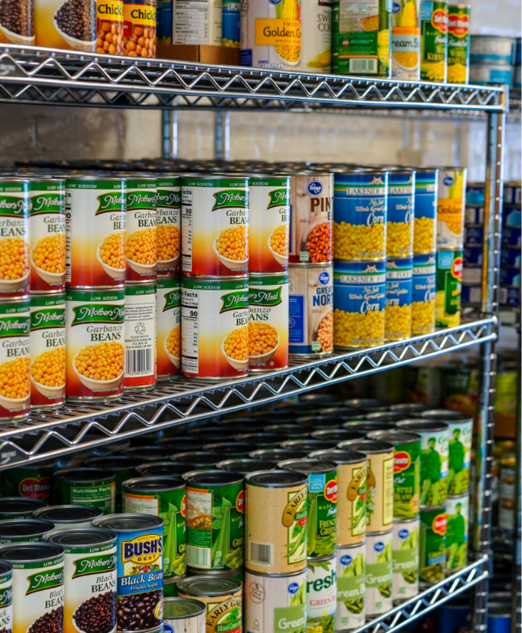

To ensure members of the University of Michigan community—whether on
a tight budget or physically restrained from getting to a grocery
store—receive equitable access to healthy, nutritious, and nourishing
food and the ability to prepare it for themselves or others.
Make an appointment now
Shopping at the Maize and Blue Cupboard is by appointment only.
Please make an appointment by visiting our sign up page
here.
Who we are
College students and staff are experiencing food insecurity at alarming rates. The Maize
and Blue Cupboard is here to provide an immediate and comprehensive response for the U-M
community. By offering resources, educational opportunities, compassionate support and more,
we help students develop the skills to make informed decisions.
Dishes, silverware, pots & pans, Tupperware, cutting boards, knives, and other kitchenware
Personal & Household
Trash bags, toilet paper, cleaning supplies, hygiene products, school supplies, baby items and
more
Support
Get connected to campus experts like CAPS, Dean of Students and Financial Aid,
as well as SNAP (Michigan’s food program)
News
Fall 2024 mobile distribution for North campus
U-M’s Maize & Blue Cupboard (MBC), the College of Engineering, Student Life, and Ann Arbor-based
Food Gatherers will host North Campus mobile food distributions to make MBC resources more
accessible for North Campus residents.
Federal assistance for food insecurity
The U.S. Department of Agriculture offers a nationwide program to help people who are
struggling with food insecurity. The national name for the program is Supplemental
Nutrition Assistance Program
From students, for students: The Maize & Blue Cupboard
Students who live on North Campus have easier access to free groceries thanks
to U-M’s Maize & Blue Cupboard (MBC), the College of Engineering, Student Life,
and Ann Arbor-based Food Gatherers.
Gallery


Location
Located in the basement of the Betsy Barbour Residence Hall, please enter via the
Maynard entrance only to ensure privacy for residents. Please contact us if you
need ramp or elevator access.


 


